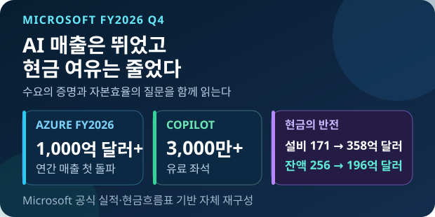
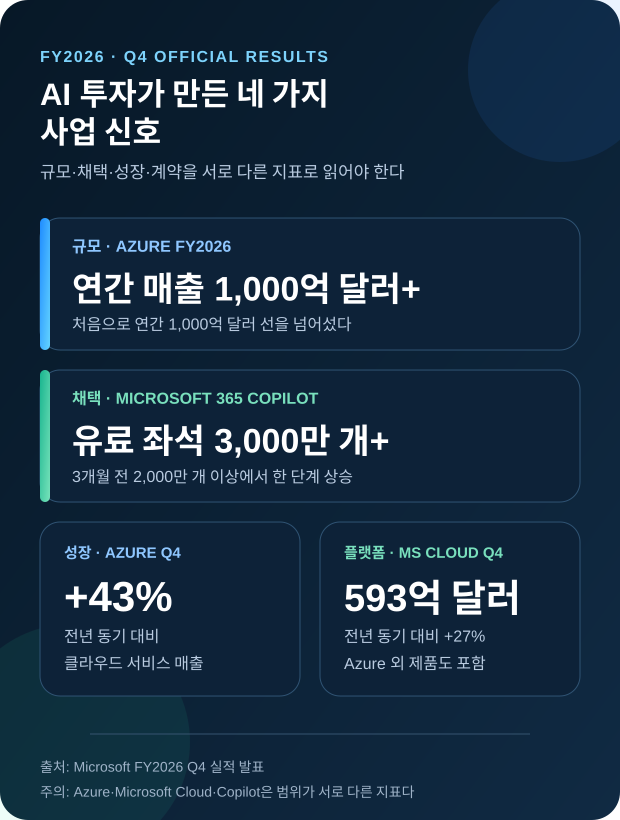
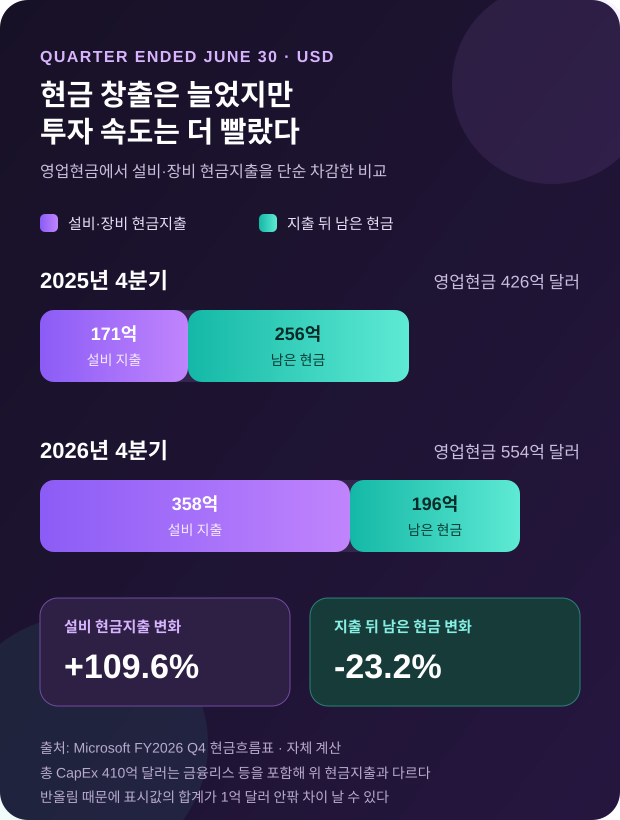

마이크로소프트 AI 투자, 매출은 증명했지만 현금은 더 얇아졌다
마이크로소프트가 AI 투자 수익을 둘러싼 논쟁에 가장 구체적인 숫자를 내놨다. Azure 연간 매출은 처음 1,000억 달러를 넘었고 Microsoft 365 Copilot 유료 좌석은 3,000만 개를 돌파했다. 그러나 4분기 설비·장비 현금지출도 358억 달러로 두 배 넘게 불었다. 이번 실적은 AI가 매출을 만들기 시작했다는 증거이면서, 그 매출을 지탱하는 자본비용이 얼마나 커졌는지를 보여 주는 결산이다.

Microsoft FY2026 Q4
AI의 문제는 이제 가능성이 아니라 전환율이다
클라우드 수요와 Copilot 판매는 빨라졌지만 Azure 전체 매출과 AI 매출은 같은 숫자가 아니다. 앞으로 봐야 할 것은 GPU를 더 사는 속도가 아니라 새 용량이 유료 사용, 현금흐름, 클라우드 마진으로 얼마나 빠르게 전환되는가다.
마이크로소프트가 7월 29일 공개한 2026 회계연도 4분기 실적에서 분기 매출은 900억 달러로 전년 동기보다 18% 증가했다. 영업이익은 406억 달러, 순이익은 358억 달러였다. 숫자 자체도 컸지만 투자자들이 기다린 대답은 클라우드와 AI가 이 성장에 실제로 기여했는지였다.
가장 선명한 답은 Azure에서 나왔다. Azure와 기타 클라우드 서비스 매출은 4분기에 43% 늘었고, Azure의 연간 매출은 사상 처음 1,000억 달러를 넘어섰다. AP도 공식 수치와 분기 실적을 대조하며 클라우드 성장과 유료 AI 사용자 증가가 시장 예상을 웃도는 실적의 중심이라고 전했다.
업무용 AI의 판매 지표도 한 단계 올라갔다. Microsoft 365 Copilot은 유료 좌석 3,000만 개 이상을 기록했다. 3개월 전 3분기 실적 발표의 2,000만 개 이상과 비교하면 하한선 기준으로 적어도 50% 증가한 셈이다. 생성형 AI가 무료 체험을 넘어 기업 예산 항목으로 들어가고 있다는 신호로 읽을 만하다.
다만 ‘좌석’은 ‘사용량’이 아니다. 회사가 직원 10만 명에게 라이선스를 사도 매주 실제로 쓰는 사람이 몇 명인지, 어떤 기능에서 시간을 절약했는지, 갱신 때 같은 가격을 낼지는 별도 문제다. 마이크로소프트는 유료 좌석을 공개했지만 활성 이용률이나 Copilot 단독 매출은 공개하지 않았다.

1,000억 달러 Azure가 말해 주는 것과 감추는 것
Azure 연간 매출 1,000억 달러는 중요한 이정표다. AI 모델 학습과 추론, 데이터베이스, 보안, 저장장치, 일반 기업용 서버가 모두 올라가는 플랫폼이 그 규모에 도달했다는 뜻이다. 대형 고객이 AI 프로젝트를 시작하면 모델 호출만 사는 것이 아니라 데이터와 네트워크, 관측, 접근제어까지 함께 쓰므로 Azure가 가장 넓게 매출을 흡수한다.
그래서 이 수치를 ‘마이크로소프트 AI 매출 1,000억 달러’라고 바꿔 쓰면 틀린다. Azure에는 AI가 아닌 전통적 클라우드 워크로드도 많다. 반대로 Microsoft 365 Copilot, GitHub Copilot, 보안용 Copilot처럼 Azure 밖의 제품군에 잡히는 AI 매출도 있다. 회사는 이들을 한데 묶은 독립 AI 매출을 공개하지 않는다.
Microsoft Cloud 분기 매출 593억 달러도 같은 주의가 필요하다. 이 항목은 Azure뿐 아니라 Microsoft 365 상업용 클라우드와 Dynamics 365 등 여러 구독 사업을 포함한다. 전년 대비 27% 성장했다는 숫자는 플랫폼 전체의 체력을 보여 주지만, 모델 한 종류의 경쟁력이나 Copilot의 수익성을 직접 증명하지는 않는다.
더 앞을 보는 지표는 상업용 잔여계약의무다. 아직 매출로 인식되지 않은 계약 잔액은 6,780억 달러로 84% 증가했다. 장기 계약이 쌓였다는 뜻이지만 인식 시점이 길고 대형 고객 비중이 높을 수 있다. 계약 잔액이 곧 다음 분기 현금 유입이라는 해석도 피해야 한다.
OpenAI와의 관계는 숫자를 더 복잡하게 만든다. 마이크로소프트는 4분기 GAAP 순이익에 OpenAI 투자 관련 순이익 4억8천만 달러가 반영됐다고 밝혔다. 운영 성과를 보기 위해 이를 제외한 비GAAP 순이익은 353억 달러였다. AI 서비스 판매와 AI 기업 지분가치 변화가 같은 순이익 줄에 섞일 수 있어 두 숫자를 나눠 읽어야 한다.
직전 3월 말 기준 마이크로소프트의 SEC 분기보고서는 OpenAI에 대한 총 자금 약정이 130억 달러이며 118억 달러가 집행됐다고 적었다. 이후 양사는 파트너십 조건을 다시 정리해 마이크로소프트가 자체 모델과 제3자 모델을 더 유연하게 쓰는 구조를 강조했다. Azure의 성장은 OpenAI 한 회사에 대한 베팅이라기보다 여러 모델을 공급하는 클라우드 전략으로 넓어지고 있다.
매출보다 더 빨리 커진 설비 지출
실적의 다른 절반은 현금흐름표에 있다. 4분기 영업활동 현금흐름은 554억 달러로 전년의 426억 달러보다 30% 늘었다. 같은 기간 설비와 장비 취득에 실제 지급한 현금은 171억 달러에서 358억 달러로 109.6% 증가했다. 현금 창출보다 인프라 지출이 훨씬 빠르게 늘어난 것이다.
영업현금에서 설비·장비 현금지출을 단순히 빼면 2026년 4분기에는 약 196억 달러가 남는다. 전년 같은 방식의 256억 달러보다 23.2% 적다. 이는 회계 전체를 설명하는 만능 지표는 아니지만, AI 인프라 확장이 현금 여유를 얼마나 빨리 흡수하는지 보여 주는 가장 직관적인 계산이다.
총 자본지출은 현금흐름표의 설비 현금지출과 다르다. Axios는 마이크로소프트의 4분기 총 자본지출이 약 410억 달러로 70% 늘었다고 보도했다. 금융리스와 자산 인식 시점이 포함되기 때문에 358억 달러와 차이가 난다. 두 수치를 섞어 성장률을 계산하면 잘못된 결론이 나온다.
자본지출의 성격도 바뀌었다. 회사 설명에 따르면 약 3분의 2는 GPU와 CPU 같은 상대적으로 수명이 짧은 자산이다. 토지와 건물은 10년 넘게 쓰지만 가속기와 서버는 더 빠르게 교체된다. 감가상각과 전력, 냉각, 네트워크 비용이 이후 분기에도 이어지므로 한 번 지은 데이터센터가 끝이 아니다.

그렇다면 AI 투자 수익은 증명됐나
‘부분적으로 그렇다’가 가장 정확한 답이다. Azure 성장률이 43%로 빨라지고 Copilot 유료 좌석이 3,000만 개를 넘은 것은 수요가 실재한다는 강한 증거다. 고객이 실험 예산만 쓰는 단계였다면 플랫폼 매출, 좌석, 장기 계약 잔액이 동시에 이렇게 움직이기 어렵다.
하지만 투자수익률을 계산할 분모와 분자가 아직 완전히 공개되지 않았다. AI에만 들어간 자본지출, AI가 직접 만든 증분 매출, 모델별 추론 원가, Copilot 할인율과 갱신률이 빠져 있다. Azure 전체 성장과 회사 전체 자본지출만으로 AI의 순수 수익률을 산출할 수는 없다.
마진은 경고등이 될 수 있다. GPU를 들여온 직후에는 감가상각과 운영비가 먼저 발생하고 고객 사용량이 뒤따른다. 효율화로 토큰당 비용을 낮춰도 더 강한 모델과 더 많은 에이전트가 절감분을 다시 소비할 수 있다. AI 사용량이 늘수록 총비용도 함께 늘어나는 ‘제번스 역설’이 클라우드 손익에 나타날 가능성이 있다.
반대로 대규모 플랫폼의 장점도 분명하다. 마이크로소프트는 같은 GPU를 사내 모델 연구, Azure 고객, Copilot 추론에 돌릴 수 있고 자체 CPU·가속기와 소프트웨어 최적화로 활용률을 높일 수 있다. 한 제품이 예상보다 부진해도 다른 워크로드에 용량을 전환할 수 있다는 점은 단일 AI 서비스 사업자보다 위험을 낮춘다.
4분기 실적에서 개인용 컴퓨팅 부문 매출은 4% 줄고 Xbox 콘텐츠·서비스는 10% 감소했다. 회사 전체가 모두 AI 덕분에 같은 방향으로 성장하는 것은 아니다. AI와 클라우드가 성장을 끌어도 기존 사업의 둔화와 구조조정 비용이 함께 존재한다는 점을 봐야 한다.
한국 기업과 개발자가 봐야 할 계산
한국 기업에는 ‘Copilot을 살 것인가’보다 ‘어디에서 비용을 회수할 것인가’가 더 중요한 질문이다. 유료 좌석 수가 늘었다는 공급자 지표만 보고 전사 도입을 결정하면 사용하지 않는 계정이 비용으로 남는다. 직무별 주간 활성률, 한 작업당 절약 시간, 오류 재작업, 보안 검토 시간, 라이선스 갱신 의향을 함께 측정해야 한다.
개발팀은 모델 선택과 클라우드 선택을 분리할 필요가 있다. Azure를 쓴다고 모든 기능을 한 모델에 고정할 이유는 없다. 품질이 중요한 작업, 값싼 분류, 사내 검색, 코드 생성에 서로 다른 모델을 배치하고 전환 비용을 계약서와 아키텍처에 반영해야 한다. 마이크로소프트가 자체·OpenAI·제3자 모델을 함께 가져가는 전략도 같은 방향이다.
국내 시스템통합과 소프트웨어 기업에는 기회가 있다. 3,000만 유료 좌석이 모두 자동으로 성과를 내는 것이 아니기 때문에 권한 설계, 문서 품질, 데이터 연결, 평가, 감사 로그, 현업 교육이 필요하다. 모델 사용료보다 업무 프로세스를 고치는 비용이 더 큰 프로젝트에서는 현지 파트너의 역할이 커진다.
반도체와 전력 산업에는 수요의 지속성을 확인하는 신호다. GPU·CPU가 자본지출의 큰 비중을 차지한다는 사실은 메모리, 네트워크, 냉각, 전력장비 수요가 모델 출시 주기보다 길게 이어질 수 있음을 뜻한다. 다만 공급 확대가 가격 하락과 감가상각 부담으로 되돌아올 수 있어 출하량만 보고 낙관하기는 어렵다.
구매 담당자는 총소유비용을 좌석 가격에서 끝내지 말아야 한다. 데이터 정리, 커넥터, 로그 보관, 보안정책, 사람 검토, 모델 변경, 퇴직자 계정 회수까지 포함해야 실제 단가가 나온다. 기업용 AI의 ROI는 모델 벤치마크보다 도입 후 90일 동안 몇 명이 어떤 작업에서 계속 쓰는지가 좌우한다.
다음 분기에는 네 숫자를 함께 보자
첫째는 Azure 성장률이다. 새 용량이 들어온 뒤에도 40%대 성장이 유지되면 공급 제약이 완화되면서 매출이 따라붙는다는 증거가 된다. 성장률이 둔화하는데 자본지출이 계속 늘면 선투자 기간이 길어졌다는 뜻이다.
둘째는 Microsoft Cloud 마진과 현금 설비지출이다. 매출이 늘어도 감가상각과 전력비가 더 빨리 늘면 수익성은 약해질 수 있다. 셋째는 Copilot의 유료 좌석뿐 아니라 활성 사용, 대형 계약 갱신, 제품군별 가격이다. 좌석의 질을 보여 줄 공개 지표가 필요하다.
넷째는 잔여계약의무의 구성이다. OpenAI 같은 대형 고객과 일반 기업 고객의 비중, 매출 인식 기간이 공개될수록 수요의 지속성을 더 정확히 판단할 수 있다. 6,780억 달러라는 큰 숫자만으로 집중 위험이 사라졌다고 말할 수는 없다.
이번 실적의 의미는 AI 거품 논쟁이 끝났다는 데 있지 않다. 논쟁의 수준이 바뀌었다는 데 있다. ‘AI가 돈을 벌 수 있는가’라는 추상적 질문은 ‘410억 달러를 쓴 분기에 Azure 43% 성장과 Copilot 3,000만 좌석이 충분한가’라는 측정 가능한 질문으로 이동했다.
내 결론은 마이크로소프트가 AI 수요의 존재는 증명했지만 자본효율까지 증명한 것은 아니라는 것이다. 매출 엔진은 켜졌고 기업 구매도 확인됐다. 이제 승부는 더 많은 GPU를 사는 회사가 아니라, 그 GPU를 더 높은 가동률과 더 낮은 토큰 원가, 더 오래 남는 고객 계약으로 바꾸는 회사가 가를 것이다.
출처와 더 읽을 자료
- Microsoft: FY2026 Q4 earnings release and financial statements
- Microsoft: FY2026 Q3 earnings call
- Microsoft: FY2025 Q4 earnings release
- AP: Microsoft beats expectations with $90B in revenue
- Axios: Meta and Microsoft report ballooning AI expenses
- Axios: Azure passes $100 billion annually
- SEC: Microsoft Form 10-Q for quarter ended March 31, 2026
- Microsoft: The next phase of the Microsoft–OpenAI partnership